XOS
XOS
Visualización del Tablero
Pantalla de la Página
1. Luz Indicadora
- Velocidad
• Las luces indicadoras están ubicadas en diferentes posiciones del tablero de instrumentos para reflejar el estado de las funciones del vehículo.
-
Marcha
-
Modo de Conducción Inteligente
• Muestra el estado del vehículo.
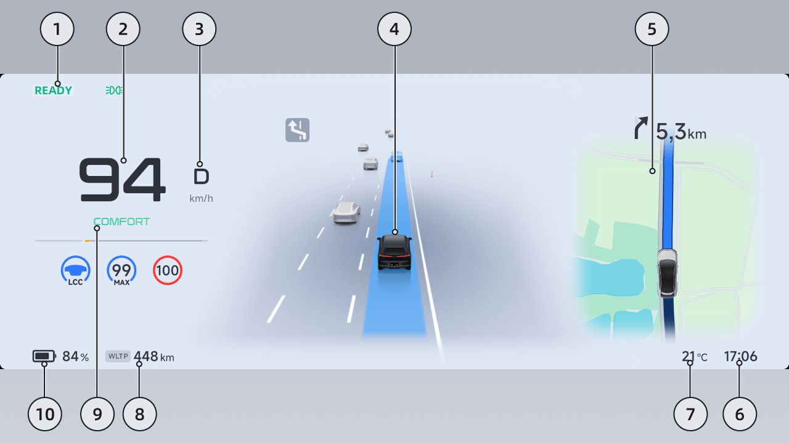
XOS
• Muestra el entorno exterior simulado del vehículo.
- Área de información del lado derecho
• La información mostrada se puede cambiar utilizando la rueda de desplazamiento del volante, y puede elegir el estado del vehículo, el consumo de energía, el kilometraje, la navegación, la música, etc.
-
Hora
-
Temperatura ambiente exterior
-
Autonomía
• En la interfaz del CID “ →Carga y Descarga→Carga”, se puede cambiar la visualización entre Dinámica y WLTP.
-
Modos de Conducción Ver página 236
-
Carga
• En la interfaz del CID “ →Carga y Descarga→Carga”, se puede activar/desactivar la “Visualización del Porcentaje de Batería”.

XOS
Indicadores del Tablero Después de encender el vehículo, algunos indicadores se iluminarán. Una vez que el sistema completa la autoverificación, estos indicadores se apagarán si el sistema funciona con normalidad. Algunos indicadores se iluminan para mostrar el estado actual de las funciones del sistema del vehículo, no una falla del sistema. Si hay algo que no quede claro durante el uso diario del vehículo, consulte el Centro de Servicio de XPENG.
indicator_high_beam(ON) Falla del SRS
indicator_smart_high_beam(ON) Cinturón de seguridad del conductor sin abrochar
indicator_smart_high_beam_error Cinturón de seguridad del pasajero delantero sin abrochar
indicator_smart_high_beam_standby Cinturón de seguridad del pasajero trasero izquierdo sin abrochar
indicator_left_turn_lamp Cinturón de seguridad del pasajero trasero central sin abrochar
indicator_right_turn_lamp Cinturón de seguridad del pasajero trasero derecho sin abrochar


XOS
indicator_low_beam(ON) Límite de velocidad en la señal de límite de velocidad
indicator_fog_lights(ON) Límite de velocidad del radar electrónico
indicator_parking_lamp(ON) Sistema de alta tensión listo y vehículo en estado conducible
indicator_auto_elow_beam(ON) Falla de la batería
indicator_lane_departure_failure Límite de potencia de conducción
indicator_charge_light(Connected) Falla del tren motriz
indicator_timer_charge(ON) Sobrecalentamiento del motor y del controlador
indicator_eps_warn Falla del motor y del controlador

XOS
Encendido fijo: Función de estacionamiento activada Parpadeando: Estado incorrecto de la pinza de freno Temperatura de la batería de tracción demasiado baja
Encendido fijo: falla del freno de estacionamiento Parpadeando: Sistema de estacionamiento en modo de mantenimiento
Temperatura de la batería de tracción demasiado alta
AUTO HOLD activado SOC de la batería de tracción demasiado bajo
Falla de AUTO HOLD Falla de la batería de tracción
Falla del sistema de frenos Batería de tracción desconectada
Parpadeando: Programa Electrónico de Estabilidad activado Encendido fijo: Falla del Programa Electrónico de Estabilidad
Falla de la Advertencia de Colisión Frontal
Programa Electrónico de Estabilidad OFF Advertencia de Colisión Frontal OFF

XOS
Hay demasiados indicadores encendidos al mismo tiempo, y todas las posiciones de visualización de indicadores están ocupadas.
Falla del Sistema Antibloqueo de Frenos
Degradación del rendimiento de frenado Falla del sistema de asistencia al conductor
HDC activado Presión de neumáticos anormal o falla del Sistema de Monitoreo de Presión de Neumáticos
Falla de HDC Alguna puerta, el capó delantero o el baúl sin cerrar
Sin señal de límite de velocidad Control de Centrado de Carril activado
Velocidad máxima límite de ACC/LCC, y alguna función activada
El Control de Centrado de Carril puede ser activado
Velocidad máxima límite de ACC/LCC, y ambas no activadas Asistente Inteligente de Estacionamiento activado


XOS
Lámpara indicadora de falla de LCC El Asistente Inteligente de Estacionamiento puede ser activado
Indicador de función de remolque no activada* Control de Crucero Adaptativo activado
Lámpara indicadora de falla de remolque* El Control de Crucero Adaptativo puede ser activado
Indicador de función de remolque normal* Control de Crucero Adaptativo no disponible
Activación del Sistema de Asistencia de Velocidad Excede el límite de velocidad de la señal de límite de velocidad
Piloto Guiado de Navegación Inteligente no disponible Asistente Inteligente de Estacionamiento no disponible
Control de Centrado de Carril no disponible Indicador de nivel bajo de líquido lavaparabrisas


XOS
Pantalla Central de Información (CID)
Visualización de páginas La CID muestra de forma predeterminada un estado de pantalla dividida, con la interfaz de navegación del mapa a la izquierda y la interfaz de conducción inteligente global a la derecha.
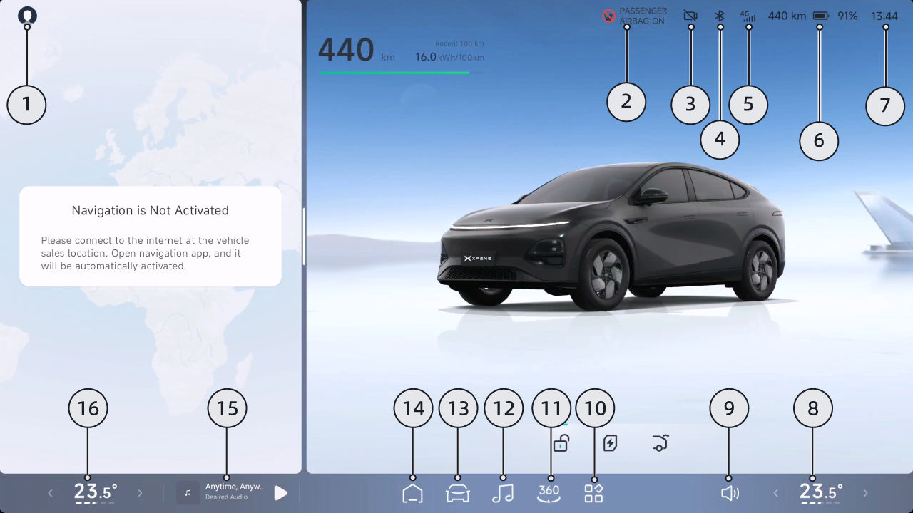
XOS
1. Cuenta y hábitos Ver página 54
-
Centro de aplicaciones
-
Imagen panorámica 360° AVM Ver página 73
• Haga clic en Iniciar sesión para mostrar el avatar de su cuenta.
• Configure los hábitos de uso del vehículo.
-
Aplicación de música Ver página 57
-
Interruptor de desactivación del airbag del acompañante
-
Grabadora de conducción*
-
Configuración
• Acceso a la configuración del control del vehículo.
• Muestra el estado actual del video de conducción Ver página 83
-
Página de inicio
-
Bluetooth
-
Componente de música Ver página 57
• Haga clic para volver al escritorio.
-
Red
-
Batería de tracción
• Muestra la carátula del medio que se está reproduciendo, el nombre del medio y la fuente de reproducción.
• Muestra la autonomía actual y la carga restante de la batería.
• Haga clic para pausar o reanudar la reproducción de música.
- Hora
• Deslice hacia la izquierda o la derecha para ir a la canción anterior o siguiente.
-
Componentes del aire acondicionado del acompañante
-
Componentes del aire acondicionado del conductor Ver página 252
• Muestra el estado actual de temperatura y volumen de aire del aire acondicionado del lado del acompañante.
• Muestra el estado actual de temperatura y volumen de aire del aire acondicionado del conductor principal.
• Haga clic para ajustar el aire acondicionado
- Ajuste del volumen
• Haga clic para ajustar el aire acondicionado Ver página 252
XOS
Multitarea en pantalla dividida
Deslice para volver a la página anterior de la ventana correspondiente.
Arrastre la línea de pantalla dividida para alternar entre pantalla completa y pantallas divididas, y cambiar el tamaño de la ventana de la pantalla dividida. Cuando la pantalla dividida se cambia a pantalla completa, se memorizará la última aplicación abierta con pantalla dividida.
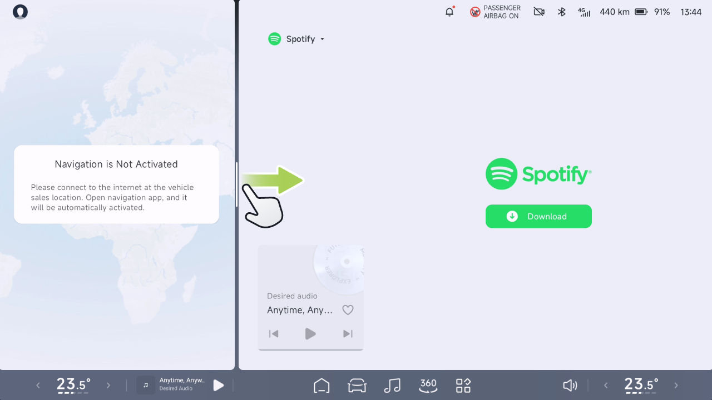
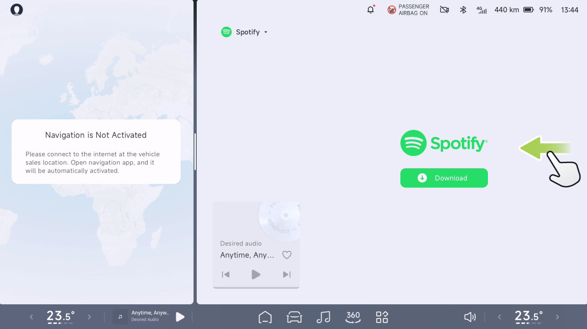
XOS
Toque la línea de pantalla dividida para fijar el modo de ventana pequeña. En la ventana pequeña, se pueden mostrar Asistente de Realidad Virtual en tiempo real, Mapa, Música y Navegador.
En el modo de pantalla dividida, se pueden abrir diferentes aplicaciones en ventanas grandes, lo que permite, por ejemplo, que el conductor vea la interfaz de navegación y el acompañante delantero mire videos, escuche música y lea letras simultáneamente.
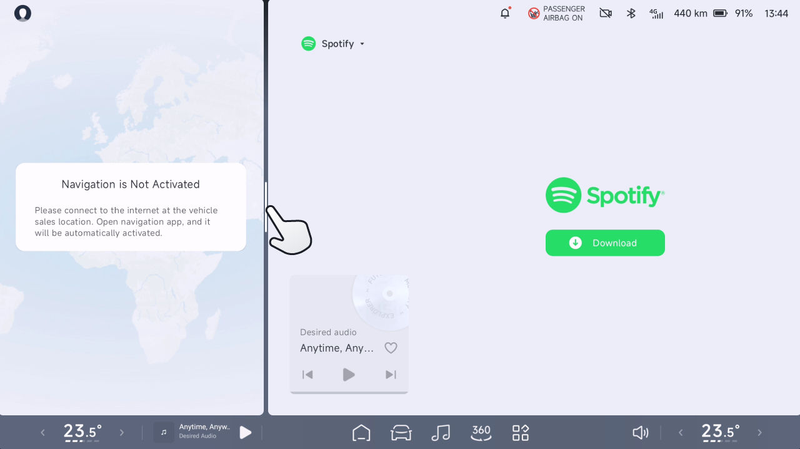
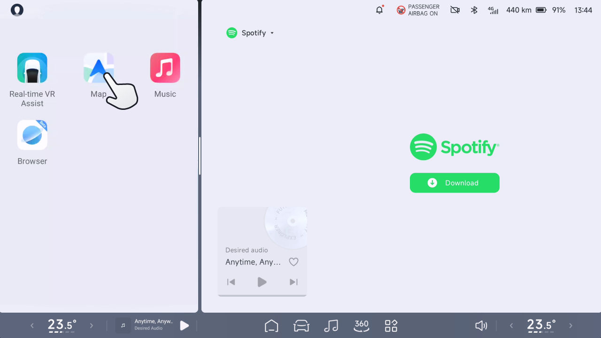
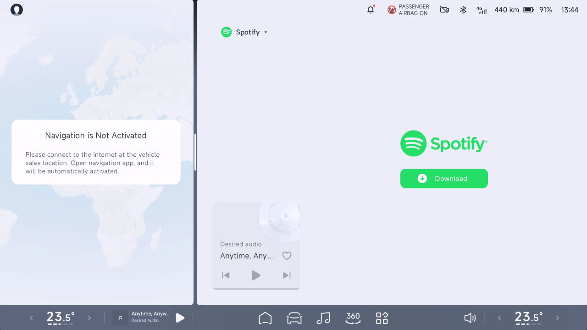
XOS
Interacción por gestos
Deslizar con tres o cuatro dedos hacia la izquierda o la derecha permite cambiar entre diferentes ventanas de aplicaciones. Sin embargo, no funciona en modo de pantalla completa.
Tres dedos deslizando hacia abajo permite salir de la aplicación abierta en la ventana grande en el modo de pantalla dividida y luego regresar a la página de inicio correspondiente.
Consejos
El área de la barra de tareas inferior no participa en los gestos. La barra de estado y la barra de tareas inferior no se ocultan durante el intercambio.
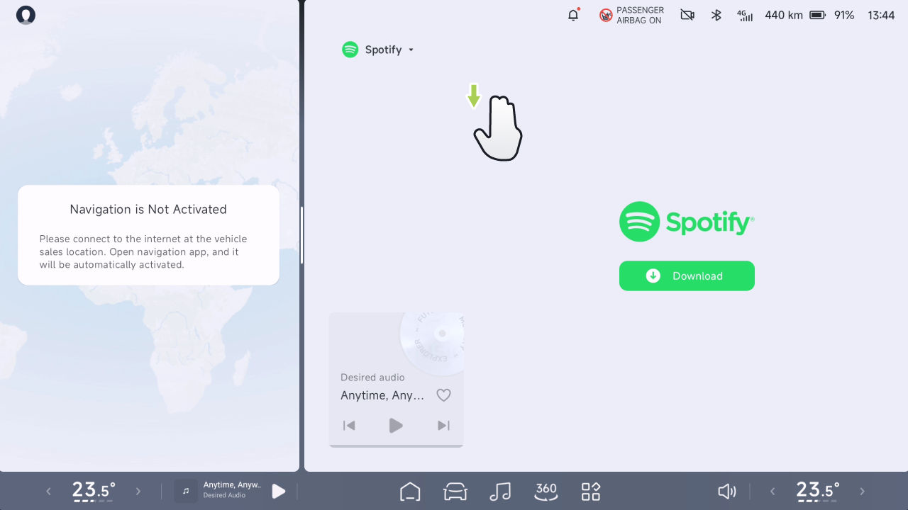
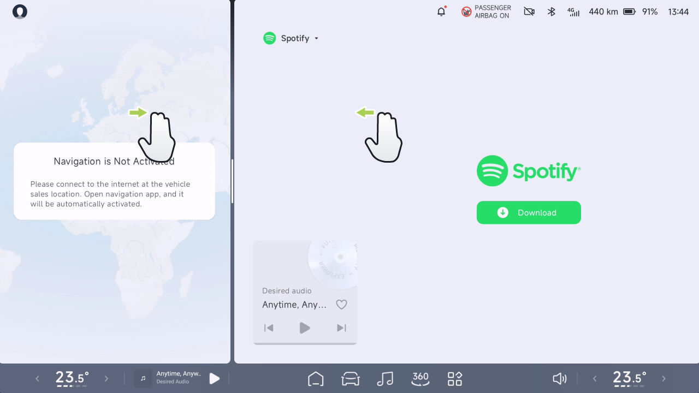
XOS
Personalizar la barra de tareas inferior
- Toca “Listo” o toca el espacio en blanco de la barra de tareas inferior para salir del estado personalizado.
Centro de Aplicaciones
1. Para personalizar la barra de tareas inferior, mantén presionada cualquier área del icono de la barra de tareas inferior.
- Puedes arrastrar el control de funciones y los iconos de componentes de acceso directo en Aplicaciones, Ventanas y Puertas, Asientos y A/A al espacio en blanco de la barra de tareas inferior.
1. En la barra de tareas inferior, toca el icono para abrir el Centro de Aplicaciones, y toca cualquier espacio en blanco del Centro de Aplicaciones para salir rápidamente.
-
En el estado personalizado, toca en la esquina superior derecha o arrastra el icono al Centro de Aplicaciones y suéltalo para quitar el icono de la barra de tareas inferior.
-
Toca el icono de la aplicación para abrirla. Las aplicaciones que se están descargando e instalando también tienen una visualización de estado correspondiente.
-
Mantén presionado el icono de la aplicación o un espacio en blanco para entrar en el estado personalizado del Centro de Aplicaciones. En este
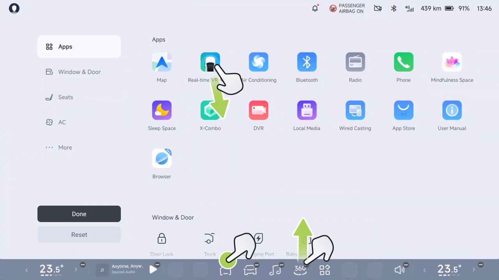
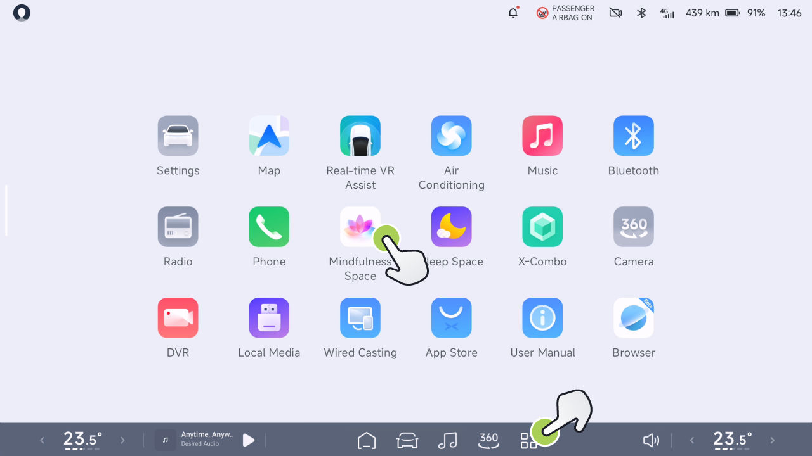

XOS
momento, puedes arrastrar el icono para ordenarlo en la lista de aplicaciones.
Configuración de pantalla
Panel de accesos directos
Ajuste de brillo
Para las funciones de uso frecuente, puedes operar directamente desde el panel de accesos directos sin abrir la aplicación. Desliza hacia abajo desde la parte superior de la pantalla para desplegar el panel de accesos directos, y desliza hacia arriba para plegarlo. El panel de accesos directos se pliega cuando tocas un espacio en blanco o abres una nueva pantalla.
En la CID, ve a la interfaz “ →Pantalla”, y puedes ajustar el brillo de la pantalla táctil y de la pantalla del tablero mediante los controles deslizantes.

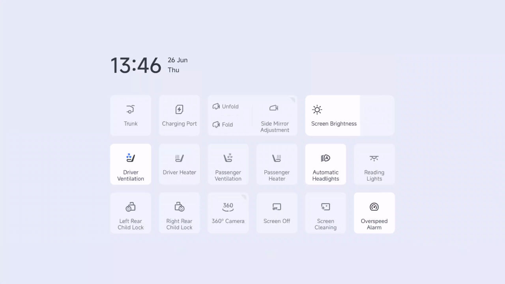
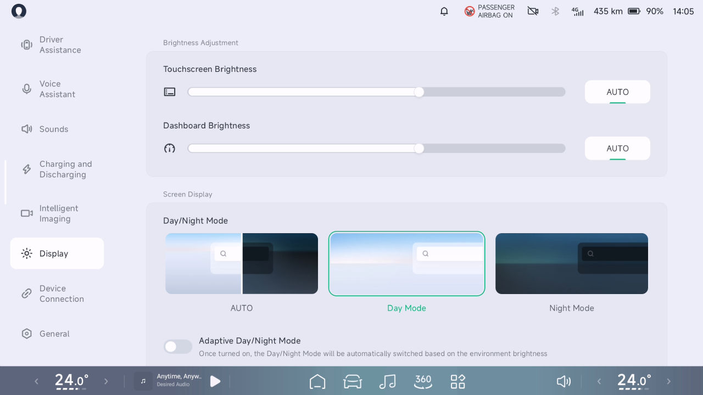
XOS
Modo de visualización
Modo de espera
En la CID, ve a la interfaz “ →Pantalla”, y puedes cambiar entre Automático, Modo Día y Modo Noche. También puedes activar o desactivar el “Modo Día/Noche Adaptativo”. Después de activarlo, cambiará automáticamente al Modo Día/Noche según la luz ambiental.
En la CID, ve a la interfaz “ →Pantalla”, y puedes entrar en el “Modo de espera”. En el “Modo de espera”, los faros, la pantalla táctil y el tablero se apagarán.

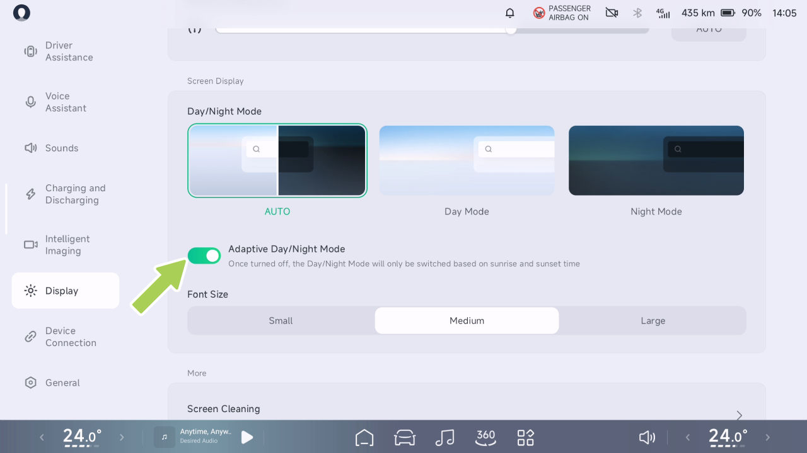
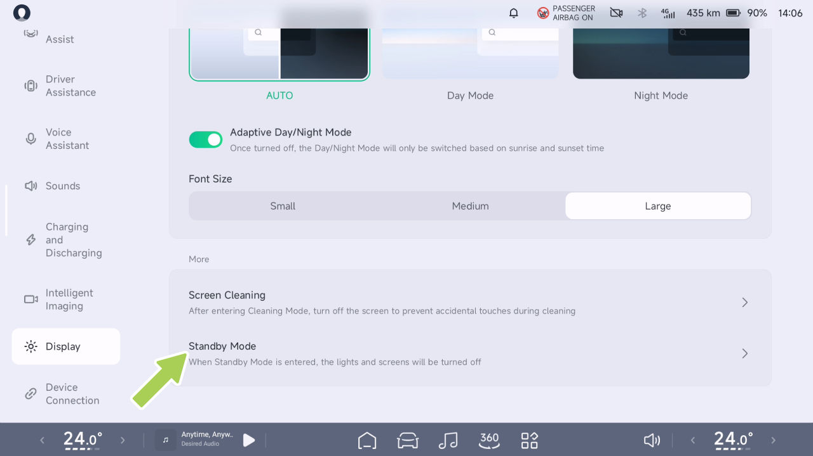
XOS
Asistente de voz
Modo de activación
Introducción
Xpeng puede activarse de las siguientes maneras:
• Botón de voz en el volante
• “Hey XPENG”
En la CID, ve a la interfaz “ →Asistente de voz”, y puedes activar o desactivar “Hey XPENG”. Después de habilitar la función, agrega “Hey XPENG” antes o después de un comando para iniciar el servicio Xpeng en cualquier momento. Por ejemplo:
• Hey XPENG, enciende el A/A.
• Navega a casa, Hey XPENG.
En la CID, andá a la interfaz “ →Asistente de Voz” y podés activar “Asistente de Voz”. Esta función admite la activación de funciones como “Hey XPENG y Respuesta Instantánea”.
• ¿Cuánto tiempo tardaré en llegar al destino? Hey XPENG.
• Hey XPENG, reproducí una canción.
Solo después de activar el “Asistente de Voz” se pueden habilitar otras funciones del Asistente de Voz.
Selección de Idioma del Asistente de Voz
En la CID, andá a la interfaz “ →Asistente de Voz” y tocá “Selección de Idioma del Asistente de Voz”. Podés seleccionar el idioma del Asistente de Voz,

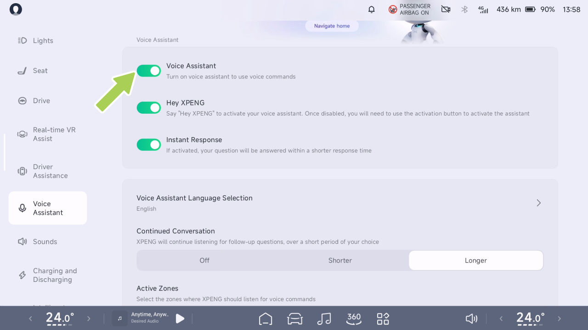
XOS
descargar e instalar un nuevo paquete de idioma, y cambiar a un nuevo idioma.
• Más largo: Después de seleccionar la opción, Xpeng puede seguir escuchando durante un período de tiempo después de ejecutar la tarea anterior. En este momento, Xpeng puede emitir nuevos comandos directamente sin necesidad de despertarlo repetidamente.
Modo de diálogo
Zonas de Activación
El Asistente de Voz admite el reconocimiento de diálogo de voz de cuatro zonas en dos filas del vehículo, y cada pasajero del vehículo puede despertar a Xpeng en cualquier momento para mantener un diálogo. Mediante la localización de la fuente de sonido y la capacidad de separación de voz de las seis zonas de reconocimiento de voz, Xpeng puede distinguir con precisión qué posición da los comandos y proporciona los servicios correspondientes. El diálogo entre los pasajeros no interfiere entre sí.
En la CID, andá a la interfaz “ →Asistente de Voz” y podés seleccionar "Desactivado"、"Más corto" o "Más largo".
• Desactivado: El modo de diálogo se desactivará después de seleccionar la opción.
• Más corto: Después de seleccionar la opción, Xpeng solo puede ejecutar un comando por cada diálogo.

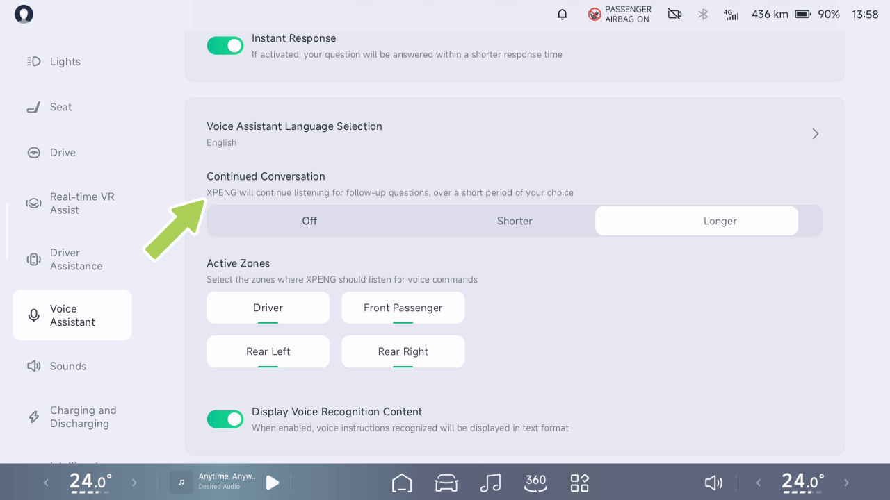
XOS
brindarte servicios de voz básicos, incluyendo entre otras las siguientes funciones:
• Control por voz del A/A
• Control por voz de los asientos
• Control por voz de puertas y ventanillas
• Control por voz de la iluminación
• Control por voz de la navegación
Unirse al Programa de Mejora de la Experiencia del Usuario del Asistente XPENG
En la CID, andá a la interfaz “ →Asistente de Voz” y podés cerrar la zona de reconocimiento de voz. Después de cerrarla, el sistema ya no aceptará comandos de voz de esta zona de reconocimiento de voz.
Para hacer a Xpeng cada vez más inteligente, te invitamos sinceramente a unirte al “Programa de Mejora de la Experiencia del Usuario del Asistente XPENG”.
Diálogo sin Internet
En entornos con mala conexión de red como estacionamientos subterráneos, autopistas y túneles, algunos servicios de conversación que dependen en gran medida de Internet (como reproducir música) están temporalmente no disponibles. Sin embargo, Xpeng todavía puede

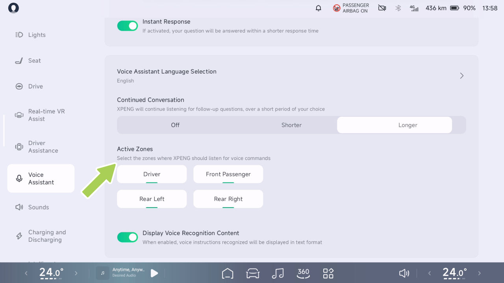
XOS
Antes de habilitar esta función, necesitás revisar y aceptar el Programa de Mejora de la Experiencia del Usuario del Asistente XPENG. Después de habilitar esta función, el sistema puede recopilar información de uso de voz para mejorar tu experiencia de interacción por voz.
Control por voz
Voice Control permite al conductor controlar las funciones del vehículo mientras conduce. Utilizá los comandos de voz para evitar distracciones y mejorar la seguridad y la comodidad al conducir.
En la CID, andá a la interfaz “ →General→Seguridad y Privacidad”, donde podés activar o desactivar “Unirse al Plan de Mejora de la Experiencia del Usuario para el Asistente de Voz”.
Comandos de control por voz comunes (inglés)
Categoría Función Ejemplos de comandos de control por voz

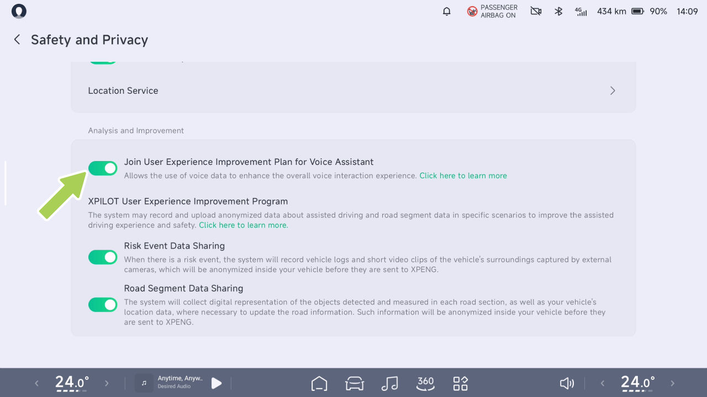
XOS
Sube más el asiento del conductor
Mueve el asiento del conductor hacia adelante
Asientos
Activa el masaje del asiento del conductor
Cambia el modo de masaje del asiento de la segunda fila
Activa el masaje delantero en intensidad baja
Enciende el aire acondicionado
Sube la temperatura del aire acondicionado del conductor
Activa el aire acondicionado automático del conductor
Enciende el purificador
Activa la recirculación
Vehículo
Activa la refrigeración máxima
Activa la calefacción máxima
Activa el modo de ventilación
Activa la ventilación del asiento
XOS
Hacer una llamada
Teléfono /
Llama a Anna
Devuelve la llamada
Navegar a
Navegación /
Salir de la navegación
Llévame a casa
Siguiente canción
Multimedia /
Pausar
Apaga la música
Reproduce música
XOS
Sube el brillo de la pantalla principal un 10%
Pantalla
Cambia al modo diurno
Aumenta el brillo del tablero
Otros
Activa el Bluetooth del conductor
Dispositivo
Enciende el Wi-Fi
Enciende la cámara
Gängige Sprachsteuerungsbefehle (Deutsch)
Categoría Función Ejemplos de comandos de control por voz
XOS
Verstelle den rechten Rücksitz nach vorne
Neige die Rückenlehne des Fahrers nach vorne
Sitz
Aktiviere die Sitzmassage des Fahrers
Aktiviere wave Massage des Vordersitzes
Stelle die Massageintensität auf Stufe hoch ein
Schalte die Klimaanlage des ganzen Fahrzeugs aus
Senke die Temperatur auf der Beifahrerseite
Erhöhe den Luftstrom
Stelle Klimaanlage auf Automatikmodus ein
Fahrzeug
Klimaanlage
Schalte die Umluft aus
Reinige die Luft
XOS
Mache einen Anruf
Telefon /
Rufe Anna
Rufe 101
Rufe zurück
Navigation /
Wo ist die Seite für Klimaanlage
Schalte Navigation aus
Bringe mich nach Hause
Vorheriges Lied
Media /
Pausiere
Spiele Musik
Schalte Sotify ein
XOS
Erhöhe die Bildschirmhelligkeit um 20%
Bildschirm
Erhöhe die Heiligkeit des Armaturenbrettes
Sonstiges
Erhöhe die Bildschirmhelligkeit des Armaturenbretts
Schalte Bluetooth ein
Geräteverbindung
Schalte 360° Kamera aus
Commandes de contrôle vocal courantes (français)
Categoría Función Ejemplos de comandos de control por voz
XOS
Monte le siège passager
Incline le dossier du siège conducteur vers l'avant
Active le massage, s'il te plaît
Sièges
Donne-moi un autre type de massage
Active le massage du siège conducteur à faible intensité
Allume toutes les climatisations
Augmente la température de la climatisation
Accrois le volume d'air
Active la climatisation automatique du conducteur
Climatisation
Ferme le purificateur d'air
Véhicule
Active la recirculation de l'air
Arrête le dégivrage
Refroidissement max
XOS
Passe un appel téléphonique
Téléphone /
Appelle le service client
Appeler 123
Recompose
Navigation /
Termine la navigation
Navigue vers
Rentrer à la maison
La chanson précédente
Média /
Arrête la diffusion de la radio
Joue de la musique
XOS
Augmente la luminosité de l'écran
Écrans
Mets la luminosité du tableau de bord en mode automatique
Tableau de bord plus lumineux
Autres
Active le Bluetooth
Appareils
Ouvre la caméra
Active le WIFI
คำสั่งควบคุมดวยเสียงทั่วไป (ภาษาไทย)
หมวดหมู การทำงาน ตัวอยางคำสั่งควบคุมดวยเสียง
XOS
ปรับเบาะนั่งไปขางหลังหนอย
ปรับพนักพิงหลังผูโดยสารดานหนา ไปขางหลังสุด
เบาะ
เปดฟงกชันการนวดเบาะนั่งของคน ขับ
ปรับแรงนวดของเบาะคนขับใหสูงขึ้น นิดหนอย
ปดเครื่องปรับอากาศทั้งคันรถ
ปรับอุณหภูมิของที่นั่งคนขับสูงขึ้น เล็กนอย
เครื่องปรับอากาศ
เพิ่มความเร็วลมของเครื่องปรับ อากาศในที่นั่งดานหลัง
เปดการไลฝากระจกหลัง
รถยนต
ปดการอุนเบาะของผูโดยสารดาน หนา
เปดไฟสรางบรรยากาศ
ปดไฟตัดหมอก
ตั้งไฟสรางบรรยากาศเปนสีแดง
XOS
โทรศัพท
โทรศัพท /
โทรหาผูติดตอ
โทร 123
โทรหมายเลขเมื่อกี้
การนำทาง /
นำทางไปที่
ไปที่บาน
นำทางไปบริษัท
รายการวิทยุกอนหนา
สื่อ /
เพลงถัดไป
เลนเพลง
หยุดเลน
XOS
เปดหนาจอทั้งหมดในรถ
หนาจอ
ปรับหนาจอใหสวางขึ้น
เปดความสวางอัตโนมัติของหนาจอ ดานหนา
อื่น
เปดบลูทูธ
อุปกรณ
เปดกลอง
เปดกลองหนา
X-Combo
Introducción
Para garantizar la experiencia funcional, se recomienda actualizar la aplicación Xpeng Motors a la versión 2.34.0 o superior. El sistema del vehículo debe actualizarse a la versión 5.4.5 o superior.
precaución
La función X-Combo permite personalizar de forma individual las funciones del habitáculo según tus hábitos de conducción. Por ejemplo, a la hora del almuerzo en días laborables, cuando tu vehículo está en la oficina, puedes preactivar el aire acondicionado remoto para ajustar la temperatura interior y, al entrar en el vehículo, la posición del asiento se ajusta automáticamente al modo siesta.
XOS
App del vehículo
para incluir el combo en tu colección. En el cuadro de búsqueda de la parte superior derecha, puedes buscar tarjetas de Combo mediante códigos de Combo y palabras clave.
Acceso a la función
Mis Combos
En la CID, inicia sesión en tu cuenta y podrás activar, desactivar, eliminar, restaurar o ejecutar combos.
Edición de Combos
El X-Combo admite la edición personalizada de tarjetas en Mis Combos.
1. En la CID, inicia sesión en tu cuenta y, en la interfaz Mis Combos, toca la Tarjeta de Combo para acceder a los detalles de la tarjeta.
En la CID, toca « » y luego toca «X-Combo» en el Centro de Apps para entrar en la interfaz X-Combo.
- Toca el icono y, en el menú desplegable, selecciona «Modificar Combo».
Seleccionar Combo
- Usa la App XPENG para buscar un código de Combo o escanear el código QR para editarlo.
El X-Combo ofrece una selección de combos de conducción innovadores y prácticos. Puedes seleccionar combos en la interfaz «Tienda recomendada». Toca «Tarjeta de Combo» para ver sus detalles. En la CID central, inicia sesión en tu cuenta y toca «Agregar»
Consejos
Después de modificar una escena, solo se puede actualizar de forma sincronizada una vez que tanto el IVI

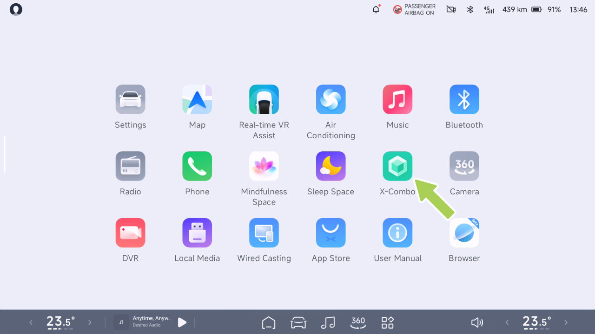

XOS
como el dispositivo móvil estén conectados a la red.
CID, seleccioná el combo correspondiente y tocá “Restaurar” para detener el combo y volver al estado original.
Vista en ejecución
• Una vez completado el combo, también podés ir a “ →X-Combo→Mis Combos” en la pantalla de control central, seleccionar el combo que quieras restaurar y tocar “Restaurar” para detener el combo y volver al estado original.
Los combos habilitados realizarán automáticamente una o más funciones continuas cuando el vehículo cumpla las condiciones de activación especificadas. Podés tocar “X-Combo en ejecución” en la barra de estado en la parte superior del CID para ver, detener o restaurar el combo en ejecución.
Consejos
Restauración con un botón
Las capacidades atómicas actualmente compatibles son el control de climatización, las posiciones de los asientos, las pantallas, y se irán agregando más capacidades atómicas recuperables en versiones posteriores.
Podés restaurar el estado previo al escenario durante o después del funcionamiento del escenario inteligente mediante los siguientes métodos:
• Mientras el combo está activo, podés tocar “X- Combo en ejecución” en la esquina superior izquierda del CID. En la tarjeta en vivo expandida, seleccioná el combo que quieras restaurar y tocá “Restaurar” para detener el combo y volver al estado original.
Aplicación móvil
Acceso a la función
En la App de XPENG, andá a la interfaz “XPENG→X-Combo”, y podés personalizar tus propios combos.
• Mientras el combo está en ejecución, también podés ir a “ →X-Combo→Mis Combos” en la

XOS
Seleccionar Combo
admite varios activadores de automatización, incluidos comandos de voz, hora, entorno, estado del vehículo y más. Los usuarios pueden configurar una amplia variedad de acciones de ejecución, como ajustes del modo de conducción y configuraciones del aire acondicionado.
X-Combo ofrece una selección de combos de conducción innovadores y prácticos. Podés seleccionar combos en la interfaz “Tienda Recomendada”. Tocá “Tarjeta de Combo” para ver sus detalles. Tocá “+Agregar” para incluir el combo en Mis Combos. También podés ajustar el combo usando el botón “Personalizar” según tus hábitos de conducción. En el cuadro de búsqueda en la parte superior derecha, podés buscar tarjetas de Combo usando códigos de Combo y palabras clave.
A través de la opción “Avanzado”, podés configurar combos de aplicación avanzados adicionales, como detección continua de múltiples condiciones, ejecución sincrónica de múltiples tareas y ejecución de instrucciones con retardo.
Consejos
precaución
Después de modificar un escenario, solo puede actualizarse de forma sincronizada una vez que tanto el IVI como el dispositivo móvil estén conectados a la red.
• Asegurá la seguridad de los vehículos y las personas cuando los escenarios estén activos.
• En la interfaz “Crear un Escenario”, se recomienda seleccionar ““””. Este modo evalúa el nivel de seguridad del escenario según la condición del vehículo antes de la ejecución. Si se detecta un riesgo para la seguridad de conducción, como ajustar el modo de conducción en la posición D, X-peng preguntará a través de la tarjeta de recomendación inteligente de la pantalla de control central si se debe continuar. Si se selecciona ““””,
Personalización individual
X-Combo admite la personalización individual de las funciones del habitáculo. Tocá “X-Combo→+→Crear un combo” para comenzar la personalización personal.
El sistema X-Combo
El sistema ofrece dos métodos de activación para la ejecución de combos: "En el vehículo" y "Remoto".
XOS
el escenario se ejecutará de inmediato cuando se cumplan las condiciones de activación. Tené presente los riesgos de seguridad asociados.
Autorización→Agregar", ingresá el número de teléfono de la persona que querés autorizar y configurá el período de validez según lo necesites. De esta manera, podés compartir los derechos de acceso del vehículo con tu familia y amigos. Tras iniciar sesión en la App XPENG, el usuario autorizado puede crear una llave Bluetooth o usar las funciones de control remoto del vehículo. Se puede autorizar a un máximo de 5 familiares y amigos para usar el vehículo.
Cuenta de Usuario
Tipo de Cuenta
Descargá la App XPENG e iniciá sesión con tu número de teléfono para completar el registro de la cuenta. Si deseás usar todas las funciones del vehículo (por ejemplo, la memoria de cuenta), completá la vinculación de la cuenta del vehículo.
Cuenta del Propietario
Podés abrir la App XPENG e ir a la interfaz "Autorización del Vehículo" para ver o gestionar los usuarios autorizados. Después de encontrar al usuario que querés desautorizar, tocá "Desautorizar". Entonces se cancela la autorización del usuario.
Después de comprar el vehículo, durante el proceso de entrega, la primera cuenta vinculada y activada será la cuenta del propietario. Un vehículo solo puede vincularse a una cuenta de propietario, pero una cuenta puede vincular múltiples vehículos.
Modo Visitante
Modo visitante: Este es el modo cuando la cuenta del vehículo no tiene la sesión iniciada. En este modo, solo se puede acceder a las funciones sin restricciones de permiso de cuenta (por ejemplo, A/A, calefacción de asientos y masaje de asientos*).
Después de iniciar sesión en la App XPENG, como propietario del vehículo, podés tocar "XPENG→ Configuración→Vehículo
Cuentas de Familia y Amigos
XOS
Cuenta de Inicio de Sesión
Tocá "Gestionar Hábitos" y podés eliminar o renombrar cualquier preferencia de conducción guardada.
Cuando varias personas comparten un vehículo, iniciar sesión en la cuenta correspondiente ajustará automáticamente el asiento, la posición del espejo lateral y otras configuraciones para el usuario. Podés iniciar sesión en tu cuenta mediante cualquiera de los siguientes métodos:
Navegación a Bordo
Navegación Sin Interrupciones
• Iniciá sesión en la App XPENG en tu teléfono. Cuando desbloqueás el vehículo con una llave Bluetooth, la cuenta de usuario iniciará sesión automáticamente.
Introducción
Después de iniciar sesión y vincular con tu App móvil, la navegación sin interrupciones te permite enviar una dirección al vehículo desde tu teléfono móvil para iniciar la navegación de inmediato.
• Tocá el avatar gris predeterminado (sin sesión iniciada) en la esquina superior izquierda de la pantalla de control central, y escaneá el código QR para iniciar sesión después de iniciar sesión en la App XPENG en tu teléfono.
Operación
Memoria de Cuenta
Tomando la App XPENG como ejemplo, la navegación sin interrupciones se puede realizar mediante las siguientes operaciones:
Una vez que inicies sesión en tu cuenta, podés guardar preferencias de conducción personales como las posiciones del asiento y del espejo lateral*. Cada cuenta puede almacenar hasta seis preferencias de conducción. Después de seleccionar tu foto de perfil en el CID, podés elegir rápidamente las preferencias de conducción que deseás activar para esta sesión.
1. En la App móvil, cambiá a la interfaz “XPENG” y tocá “Buscar estaciones de carga y destinos” para entrar a la interfaz de Posicionamiento del Vehículo o Cuadro de Búsqueda. En esta interfaz, configurá el destino de navegación.
XOS
- Tocá “Enviar al vehículo” para enviar la información del destino a la pantalla de control central del vehículo.
tiempos de recarga y la duración. Tocá “Iniciar navegación” para comenzar el viaje.
- Una vez que el CID recibe la información de navegación enviada por el teléfono móvil, aparecerá una tarjeta de confirmación. Tocá “Aceptar” para lograr una navegación fluida.
Consejos
Si el SOC actual es suficiente para llegar al destino, no se agregarán estaciones de carga automáticamente.
- Durante la conducción, la distancia a la estación de carga y la hora estimada de llegada se actualizarán de forma dinámica.
Para viajes de larga distancia, el sistema puede planificar automáticamente las rutas de conducción y carga según la preferencia de carga.
Planificación de carga
1. En la interfaz del mapa del CID, tocá “Configuración del mapa” para ajustar por separado los SOC mínimos para la llegada a la estación de carga y al destino en “Configuración de preferencia de ruta de carga”.
- En la interfaz de Planificación de ruta, tocá “Cargar” para entrar a la interfaz de Planificación inteligente de carga. El sistema planificará automáticamente las estaciones de carga a lo largo del camino, y mostrará información como la información de la estación de carga, la distancia del intervalo de conducción,
XOS
App de Música
Radio
Introducción
Cambiá la fuente de audio a “Radio” para reproducir estaciones de radio locales.
El vehículo admite radio FM local.
Bluetooth
Cambiá la fuente de audio a “Bluetooth” y tocá “Conectar Bluetooth” para conectar el Bluetooth del móvil. Luego podés escuchar canciones de tu teléfono móvil en el vehículo.
Proyección por cable
XPENG ofrece apps de música personalizadas, compatibles con fuentes de audio como Spotify, Radio y Bluetooth.
Introducción
Disfrutá de la funcionalidad de proyección por cable que te permite proyectar la pantalla desde dispositivos como consolas de videojuegos y computadoras (incluyendo Switch y MacBook) a la pantalla de control central IVI para una experiencia visual sin precedentes.
En la barra de tareas inferior de la pantalla de control central, tocá “ ” para cambiar y reproducir la fuente de audio en la entrada de fuente de audio, en la esquina superior izquierda de la interfaz de música.
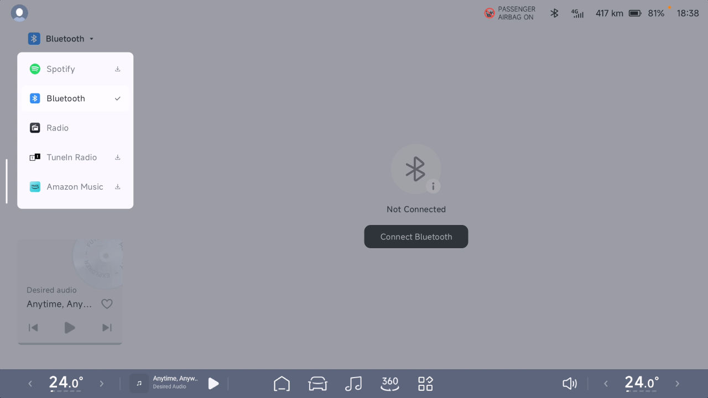
XOS
Operación
HDMI, y el otro extremo conectado al puerto C del terminal IVI.
-
Una vez conectado correctamente, la imagen se mostrará en la pantalla.
-
Proyección por cable:
• Deslizá hacia arriba o abajo en el lado izquierdo de la pantalla para ajustar el brillo de la pantalla.
• Deslizá hacia arriba o abajo en el lado derecho de la pantalla para ajustar el volumen multimedia.
• Se admite la función de activar el sonido.
1. Tocá el “ ” del CID y tocá “Proyección por cable” en el centro de aplicaciones.
-
Tocá la pantalla, tocá “Salir” en la esquina superior izquierda para salir de la proyección por cable.
-
Usá un cable HDMI y una tarjeta capturadora de video para conectar a la interfaz Type-C o Type-A de la fila delantera.
Consejos
Para dispositivos como Sony PS y Xbox, que requieren un voltaje más alto, no se recomienda usar el puerto de transmisión del vehículo para la duplicación de pantalla. Después de estacionar, puedes usar el puerto de fuente de alimentación externa para alimentar el dispositivo y realizar la duplicación de pantalla.
Consejos
La Switch requiere un cable de carga PD adicional para alimentarse, con un extremo conectado a la tarjeta de captura de video o

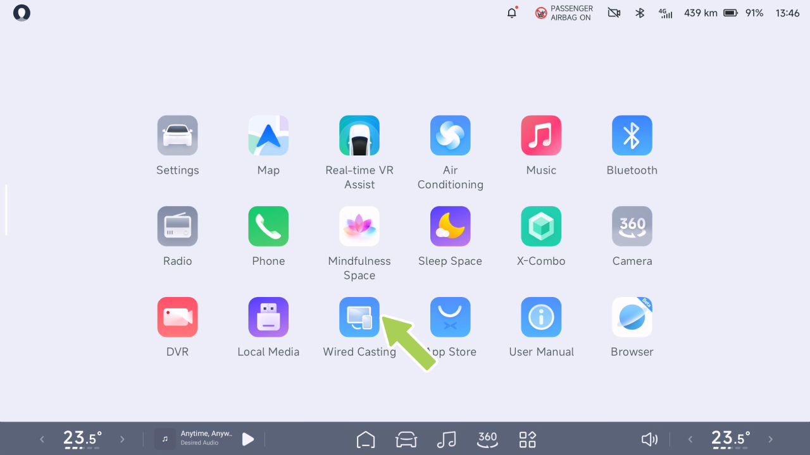
XOS
Configuración de sonido
- Ajusta el volumen del tono de llamada.
Introducción
En la CID, ve a la interfaz “ →Sonidos”, y podrás configurar los sonidos del vehículo.
Ajuste de volumen
-
Ajuste de volumen del volante: Toca para configurar el tipo de ajuste de volumen controlado por el botón de desplazamiento del volante.
-
Modo silencio: Toca para silenciar el audio del multimedia delantero o trasero para reducir la interferencia entre las zonas de pasajeros delanteros y traseros durante la reproducción multimedia.
1. Ajusta el volumen del multimedia.
-
Ajusta el volumen de la voz.
-
Ajuste de volumen según la velocidad: Toca para activar el ajuste automático de volumen en función de la velocidad del vehículo para contrarrestar el ruido, o elige
-
Ajusta el volumen de la navegación.
-
Ajusta el volumen de las llamadas.

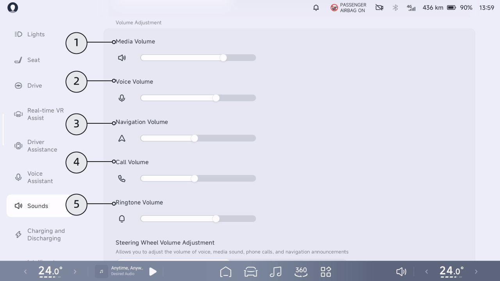
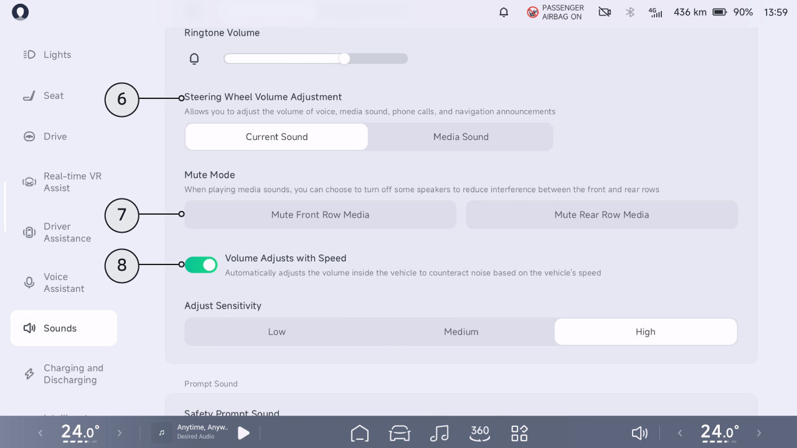
XOS
diferentes niveles de sensibilidad para adaptarse a tus hábitos de conducción.
- Sonido de aviso espacial: Una vez activado, los sonidos de aviso que indican señales espaciales, como las luces intermitentes y las alertas del radar, se originarán en sus respectivas ubicaciones de activación.
Sonido de aviso
Control inteligente
1. Sonido de aviso de seguridad: Toca para configurar el sonido de aviso y los niveles de volumen para fallas del vehículo y advertencias de conducción.
1. Reducción de volumen durante la navegación: Después de tocar para activar la función, el volumen del multimedia se reducirá automáticamente durante la reproducción de la navegación, tanto en modo compartido como privado.
-
Sonido de aviso del sistema: Una vez activado el sonido de aviso del sistema, el sonido de aviso de teclas, el sonido de aviso de cambio de marcha, el sonido de aviso del enchufe de carga externa y los efectos de sonido del modo de conducción se pueden activar o desactivar en “y más sonidos de aviso”.
-
Reducción de volumen al abrir la puerta: Después de tocar para activar la función, el multimedia
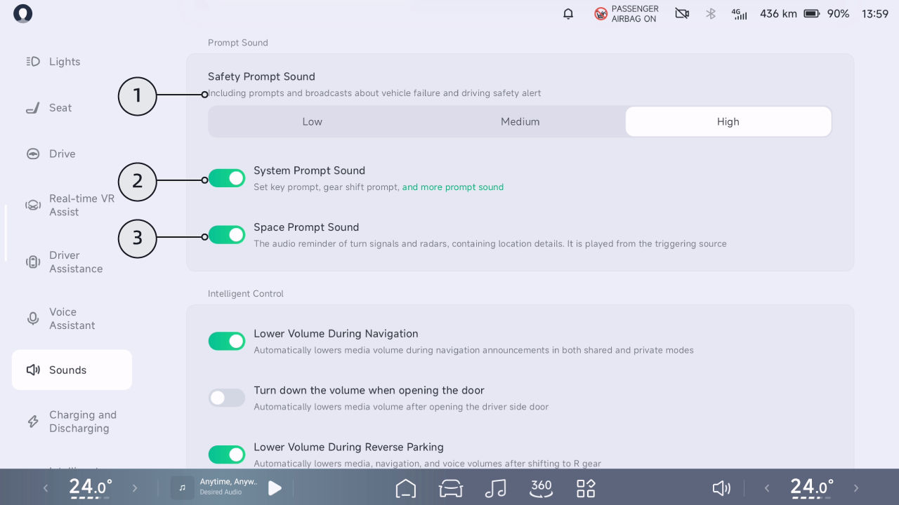
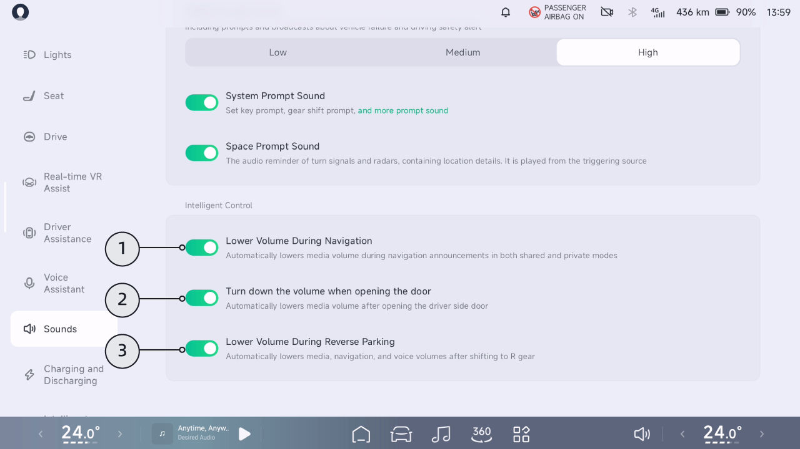
XOS
el volumen se reducirá automáticamente cuando se abra la puerta del conductor.
En la interfaz de Dispositivo Bluetooth, puedes seleccionar el dispositivo móvil que se vinculará y completar la vinculación según las indicaciones de la interfaz.
- Reducción de volumen durante el retroceso: Después de tocar para activar la función y cambiar a la posición R, los volúmenes del multimedia, la navegación y la voz disminuirán automáticamente.
Una vez que la vinculación sea exitosa, puedes confirmar en tu teléfono para sincronizar los datos de comunicación (como contactos y registros de llamadas) del dispositivo móvil al vehículo. Esto facilita responder y hacer llamadas, mejorando la experiencia de la función de teléfono integrada. La música de tu teléfono móvil también se puede reproducir a través del sistema de audio del vehículo.
Conexión de dispositivos
Introducción
Puede conectar el dispositivo mediante el Bluetooth incorporado, el Wi-Fi o el punto de acceso incorporado.
Red inalámbrica
Funcionamiento
En la CID, vaya a la interfaz “ →Conexión de Dispositivos” o toque la barra de estado en la parte superior de la pantalla de control central. Puede activar o desactivar la red inalámbrica.
En la CID, vaya a la interfaz “ →Conexión de Dispositivos” o toque la barra de estado en la parte superior de la CID para activar o desactivar el Bluetooth. Después de activar la función “Permitir Detección”, otros dispositivos Bluetooth pueden detectar el Bluetooth de este vehículo.
Bluetooth
Después de activarla, el vehículo buscará automáticamente redes inalámbricas; puede seleccionar la red deseada e introducir la contraseña para establecer una conexión.

XOS
Consejos
Consejos
• Puede conectarse y utilizar los puntos de acceso personales compartidos por su teléfono a través de la red inalámbrica, y tener en cuenta el consumo de datos al utilizarlos.
Se recomienda elegir primero la banda de 5 GHz; activar la banda de 2,4 GHz puede ser compatible con más dispositivos, pero el rendimiento de la red se verá reducido.
• La intensidad de la señal de la red conectada actualmente puede verse desde el icono de red inalámbrica en la barra de estado; si la intensidad de la señal es baja, el vehículo puede ser lento para acceder a internet.
Apple CarPlay
Apple CarPlay permite a los usuarios acceder a los servicios de forma más segura y cómoda mientras conducen, asignando las funciones principales del iPhone a la CID.
Punto de acceso incorporado
1. Entre en el “Centro de APP” y haga clic en “Apple CarPlay”
En la pantalla de control central, vaya a la interfaz “ →Conexión de Dispositivos”, y podrá activar o desactivar el punto de acceso incorporado y seleccionar el modo del punto de acceso 5 GHz o 2,4 GHz.
Puede utilizar otros dispositivos móviles para buscar el punto de acceso incorporado del vehículo, e introducir la contraseña para conectarse.

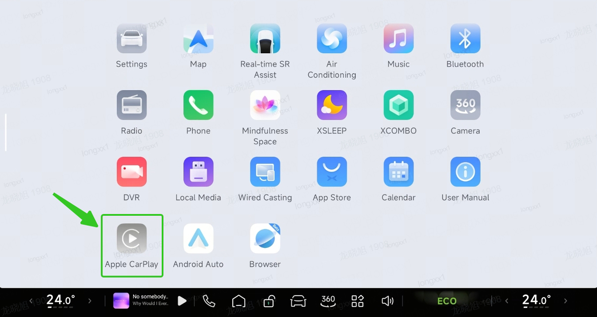
XOS
Active Apple CarPlay según las indicaciones en la CID
Actualización del Sistema
a. Método 1: Empareje el Bluetooth de su teléfono en la página de la lista de Bluetooth.
Introducción
b. Método 2: Conecte su iPhone con un cable USB.
El vehículo se puede actualizar de forma remota a través de la CID o la App móvil para obtener las funciones más recientes. Se recomienda que actualice el sistema lo antes posible después de recibir el aviso de la nueva versión.
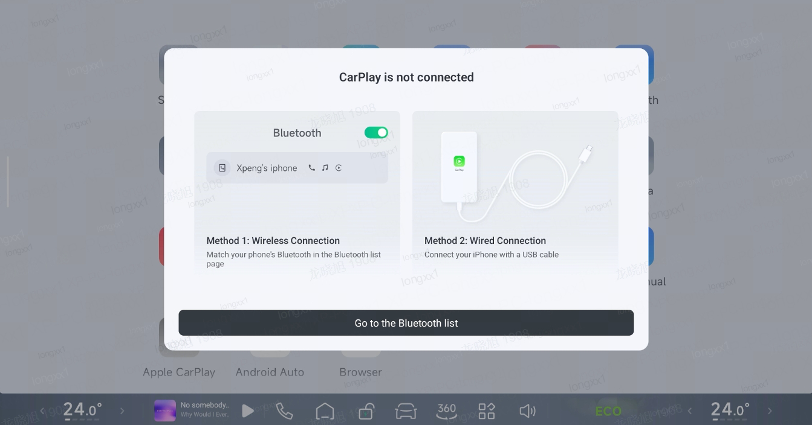
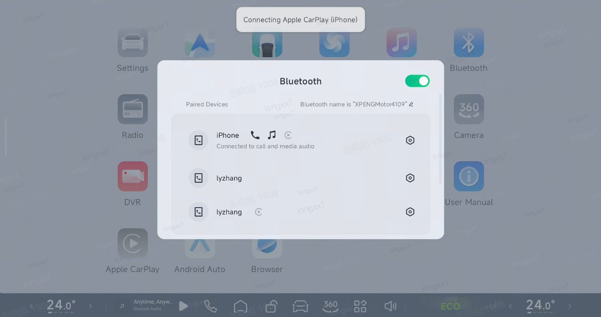
XOS
Consejos
para ver los detalles de la versión actual del sistema de infoentretenimiento.
• Asegúrese de que el vehículo esté conectado a la red, ya que no recibirá actualizaciones hasta que el vehículo esté conectado a la red.
Configuración de actualización
• Si tiene alguna otra pregunta, póngase en contacto con el Centro de Servicio de XPENG.
Toque “Configuración de Actualización” para configurar la función “Actualización Automática”. Cuando el vehículo detecte una nueva actualización más adelante, se actualizará automáticamente a las 3:00 a. m. sin confirmación manual.
Versión del Sistema
Consejos
Se recomienda activar la función de actualización automática para mantener los sistemas del vehículo actualizados en todo momento.
Método de Actualización
When a new version is available, the system will push a notification to remind you that there are new versions for update. The “System Update” Cuando haya una nueva versión disponible, el sistema enviará una notificación para recordarte que hay nuevas versiones para actualizar. La barra “Actualización del sistema” mostrará el ícono “Nueva versión”. El ícono de Actualización del sistema aparecerá en la barra de estado en la parte superior del CID .
En el CID, ve a “ →General” y toca el número de versión de XOS “” en la parte superior de la interfaz

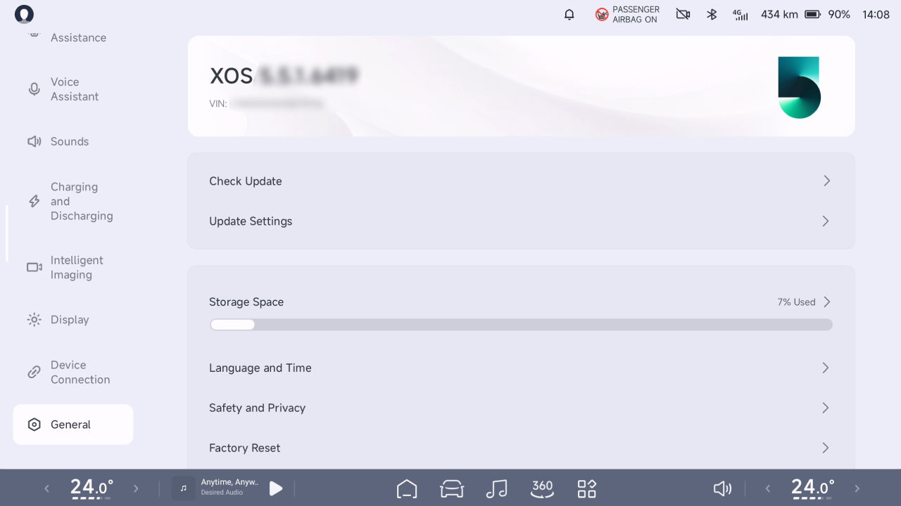
XOS
Toca el ícono Actualizar en la barra de estado del CID, o toca la barra “Actualización del sistema” para ver la descripción de actualización de una nueva versión.
Después de programar la actualización, la página de actualización del sistema mostrará la información de la reserva. Antes de que comience la actualización, puedes tocar “Cancelar reserva” en cualquier momento y reservar otro horario de actualización del sistema.
Cuando haya una nueva versión para actualizar, puedes actualizar el sistema de las siguientes tres maneras:
Actualización remota mediante la aplicación móvil
Actualizar ahora
El vehículo admite actualizaciones remotas del sistema con la “XPENG App”. Cuando haya una nueva versión para actualizar, la App enviará una notificación con un mensaje, y la interfaz de control del vehículo mostrará la tarjeta de la nueva versión, o se mostrará el ícono “Nueva versión” en la esquina superior izquierda del control del vehículo. Toca el botón de la tarjeta o el ícono “Nueva versión” para entrar en la interfaz de actualización remota del sistema, y toca “Actualizar ahora” para completar la actualización.
En la página de instrucciones de actualización de la nueva versión, toca “Actualizar ahora”. El sistema te advertirá que el “vehículo no puede usarse durante el proceso de actualización”, así que asegúrate de que el vehículo esté estacionado en una zona segura y reserva tiempo suficiente.
Toca “Confirmar” para entrar inmediatamente en la preparación de la actualización. En esta etapa, puedes verificar las condiciones de la actualización. Después de la confirmación, el proceso no se puede suspender.
Actualización programada
Precauciones y limitaciones
En la página de instrucciones de actualización de la nueva versión, toca “Reservar actualización” para establecer el período en el que no necesitas usar el vehículo. Toca “Confirmar”, y el sistema se actualizará cuando el vehículo esté bloqueado durante el período establecido.
• Antes de actualizar, asegúrate de que el SoC del vehículo sea mayor al 10 %, la palanca de cambios esté en la posición P, y el vehículo esté estacionado en una zona segura.

XOS
• Una vez que comienza la actualización, no se puede detener y el vehículo no puede usarse durante la actualización. Deja tiempo suficiente para esperar a que se complete la actualización.
• El vehículo no se puede cargar durante la actualización. Organiza de manera razonable el tiempo para la actualización y la carga.
• Una falla en la actualización del sistema puede causar que algunas funciones funcionen de manera anormal. Si la actualización falla, no uses el vehículo. Toca “Reintentar” para volver a intentar la actualización. Si fallan varios intentos, comunícate con el Centro de Servicio XPENG o el Centro de Atención al Cliente.
1. Cerradura de la puerta
• Una vez actualizado, el sistema no se puede revertir a versiones anteriores.
• Cuando la llave del teléfono no está activada, toque "Activar llave" para activar la llave del teléfono. Tras la activación exitosa, el estado original "Activar llave" cambia a "Bloqueo de puertas".
Aplicación XPENG
• Cuando el Bluetooth no está conectado, toque para seleccionar "Solo desbloquear" o "Desbloquear y arrancar".
Introducción
• Cuando el Bluetooth está conectado, toque "Desbloquear el vehículo" y luego engrane una marcha dentro de los 20 minutos para arrancar el vehículo.
Después de descargar e iniciar sesión en la aplicación XPENG en su teléfono móvil, puede verificar de forma remota el estado del vehículo y controlar ciertas funciones del vehículo.
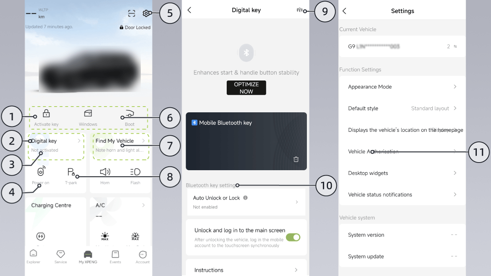
XOS
Consejos
Bluetooth sin emparejar en la pantalla de control central.
• No salga de la aplicación móvil después de desbloquear, y mantenga la aplicación móvil ejecutándose en segundo plano; de lo contrario, podría ser imposible engranar una marcha.
• Normalmente, el rango de conexión Bluetooth en un campo abierto es de unos 20 metros, lo que puede variar debido a factores como el hardware Bluetooth del móvil, la obstrucción del entorno y la interferencia.
• Si no se puede engranar la marcha, intente volver a abrir la aplicación móvil.
-
Llave digital: Toque para acceder a la interfaz de la llave digital para los ajustes de la llave Bluetooth y las verificaciones de la llave.
-
Arranque remoto: Toque para desbloquear la puerta, presione el pedal del freno dentro de los 2 minutos para engranar una marcha y luego el vehículo puede arrancarse para que otros lo conduzcan temporalmente.
-
Estado del Bluetooth: Cuando la llave del teléfono está conectada al Bluetooth del vehículo, es azul; cuando no está conectada, es gris.
-
Barra de accesos directos: Mantenga presionada esta área para personalizar las funciones de la barra de accesos directos, con un máximo de 8 funciones.
-
Ajuste: Toque para acceder a la interfaz de ajustes.
Consejos
• Cuando la llave del teléfono está conectada al Bluetooth del vehículo, también se puede usar en entornos sin señal de red, como un garaje.
- Ubicación del vehículo/mapa
• Solo la cuenta del propietario puede ver la ubicación en tiempo real del vehículo.
• El vehículo está equipado tanto con Bluetooth multimedia como con Bluetooth de llave. La llave del teléfono se conectará automáticamente al
- Parada temporal: Cuando la función "Apagar automáticamente" en el CID está desactivada y el vehículo está en estado encendido, la palanca de cambios está en la posición P. Abra
XOS
la aplicación móvil, vaya a la interfaz "XPENG" y toque "Parada temporal". En la ventana emergente, toque "Confirmar". El vehículo se bloqueará, y la pantalla táctil y el A/A permanecerán disponibles.
precaución
La autorización del vehículo necesita estar conectada a Internet y puede haber retraso en la respuesta. En caso de cualquier problema, vuelva a intentarlo. Para responder más rápido al desbloqueo y bloqueo, habilite los siguientes permisos para la aplicación XPENG Automobile en los ajustes de permisos del sistema:
Si ha activado "Apagar automáticamente" en el CID, el vehículo se apagará automáticamente después de una hora.
- Verificación de la llave: Cuando acercás el teléfono-llave al vehículo, el Bluetooth se conecta automáticamente. Si no se conectó o no se puede arrancar el vehículo al engranar una marcha, podés tocar "Verificación de la llave" para obtener una guía que te ayude a resolver el problema.
• Sistema no iOS: permiso de Bluetooth, permiso de autoarranque y permiso de ejecución en segundo plano.
• Sistema iOS: información de ubicación: siempre permitida; actualización de Apps en segundo plano; servicio de ubicación (configuración del teléfono móvil → privacidad → servicio de ubicación).
-
Configuración de la llave Bluetooth: Después de activar el teléfono-llave, podés configurar el Desbloqueo o Bloqueo automático.
-
Autorización del vehículo: Autorizá el vehículo a otras cuentas de XPENG; se puede autorizar un máximo de 5 cuentas.